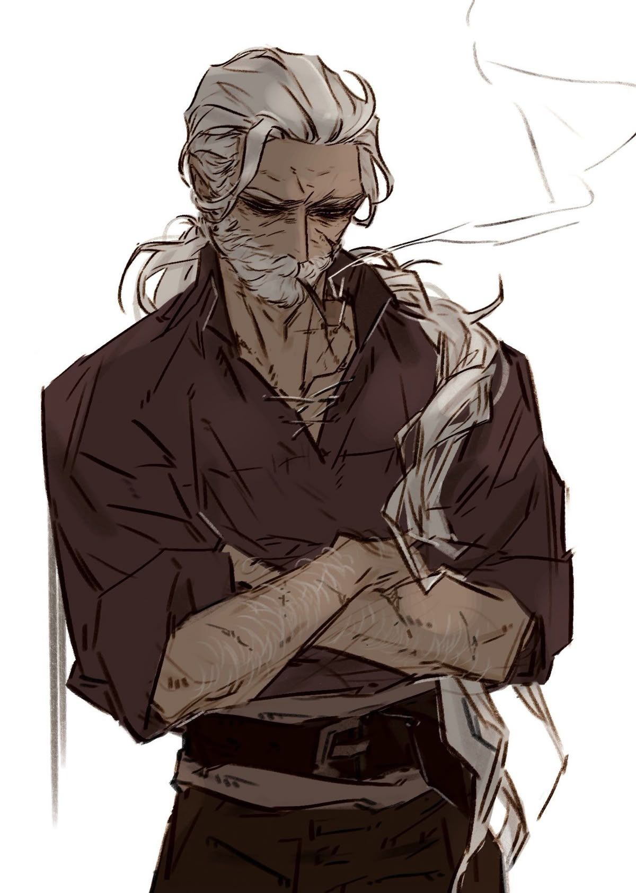
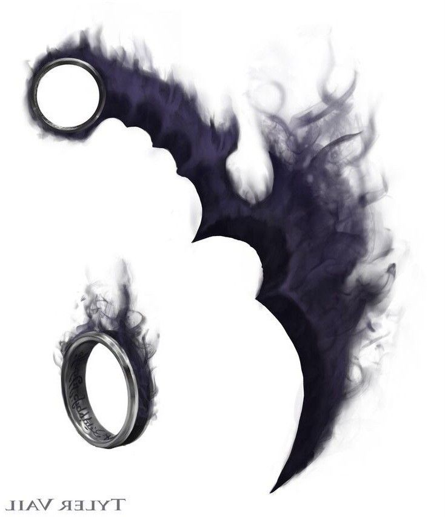

Aion Veyr
Mago arquivista · 25 anos, aparenta 60
Sobre o Herói
Órfão aos 5 anos, já guardava tudo o que via: nomes, rotinas, receitas. Ao ver um exorcismo na vizinhança, seguiu o exorcista, que o adotou como discípulo e abriu sua biblioteca de magia para que o menino pudesse aprender.
Aos 10 anos já era um mago renomado e invejado pelo Congresso dos Magos. Numa noite, sua casa pegou fogo por conta de um ataque e nem as magias de água salvaram o mestre, que lhe deixou uma chave e um mapa.
O mapa levou a uma caverna escondida por ilusão, só quem portava a chave poderia adentrar nessa caverna, cheia de livros proibidos que o Congresso dizia ter destruído. Lá dentro, 1 hora fora vale 1 ano. Assim, Aion Veyr se tornou um dos magos mais poderosos da história em apenas alguns instantes no lado de fora, mas lá dentro, havia passado décadas.
Atributos & Habilidades
-
Força5/10
-
Magia10/10
-
Defesa7/10
-
Velocidade8/10
Habilidades
- Memória fotográfica
- Magia de todos os tipos
- Exorcismo
- Rituais e selos
Inventário & Conquistas
-

Anel das Sombras
LendárioPermite conjurar objetos de uma dimensão da sombras, como a lâmina de fumaça roxa da ilustração ou itens guardados nessa dimensão.
-
Livro de rituais
RaroRituais já escritos de invocação, cura, elementos e selos de aprisionamento, prontos para uso sem perder tempo.
-
Cruz de prata benta
RaroBenzida pelo papa e roubada de um colecionador. Serve para exorcismos.
-
Água benta
ComumFrasco de proteção contra demônios, vampiros e outros seres macabros.
-
Velas rituais
ComumMateriais de magia para montar círculos e rituais em qualquer lugar.
-
Chave do mestre
ÉpicoÚltima herança do mestre, que levou Aion à caverna dos livros proibidos.
Contato com a Guilda
Precisa de um ritual, um exorcismo ou um conselho de quem leu tudo? Envie uma mensagem para a guilda.
Enviar e-mail